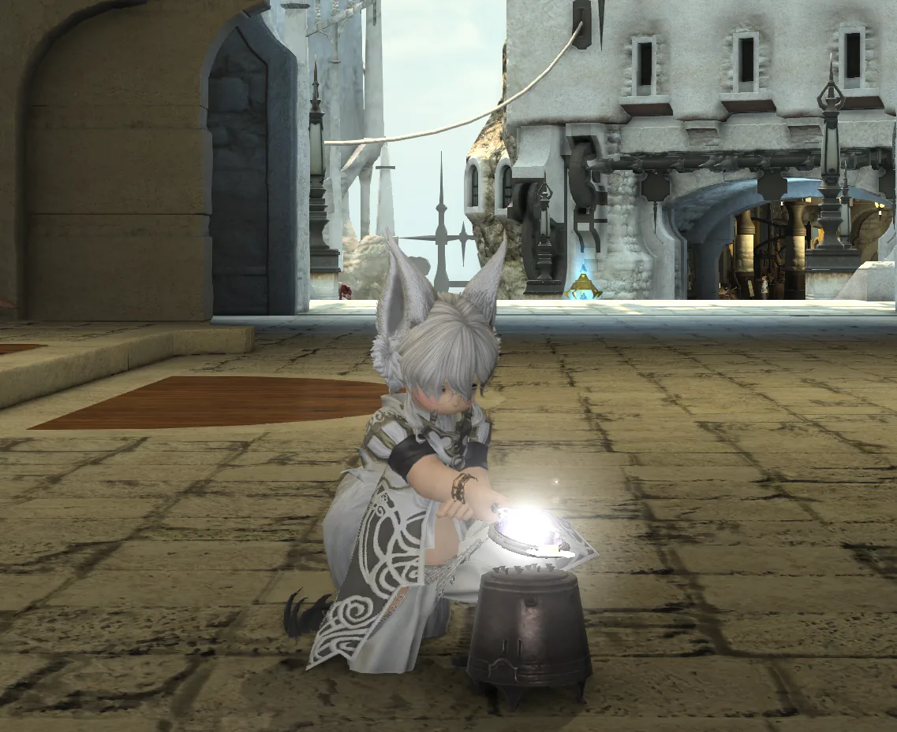
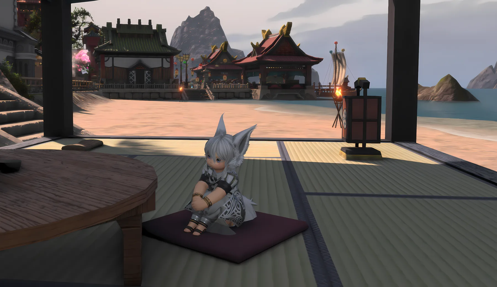
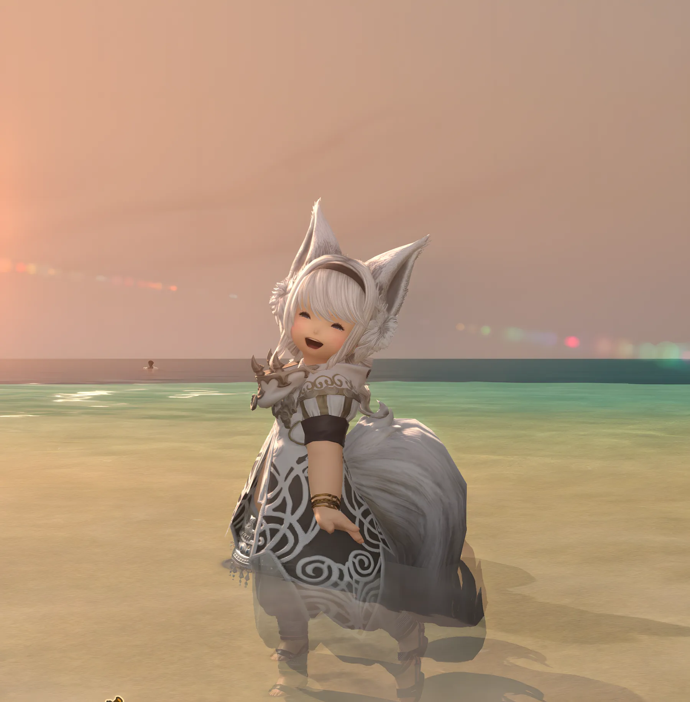
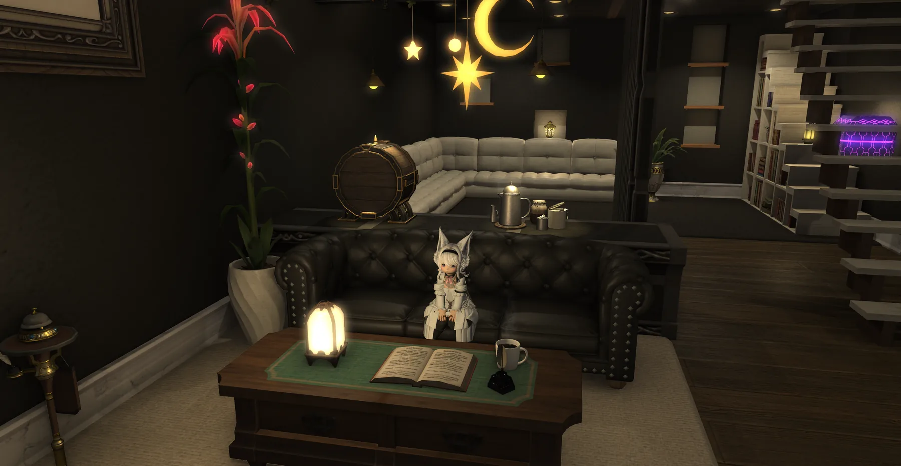
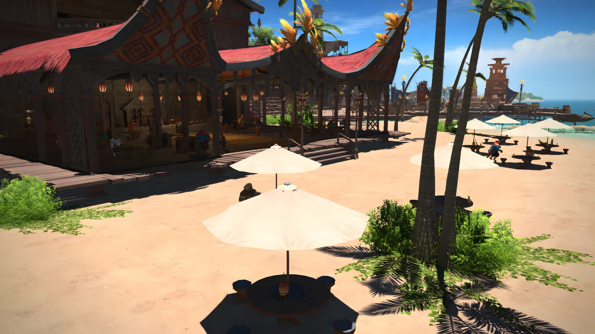

すべてを最初から覚える必要はありません。気になったものや、困ったときに必要な項目から見てみてください。
TABLE OF CONTENTS
目次
ALL GUIDES
カテゴリを詳しく見る
ゲームを始めた直後クエスト・エーテライト・ホームポイントなど詳しく見る →
戦闘に慣れてきたらロール・敵視・GCD・コンボなど詳しく見る →

装備と成長装備更新・アイテムレベル・修理・マテリア詳しく見る →
ダンジョン・パーティコンテンツファインダー・ロット・募集詳しく見る →
移動を快適にするエーテライト・マウント・フライング詳しく見る →
所持品・整理所持品・アーマリーチェスト・リテイナー詳しく見る →
設定・UIHUD・表示・チャット・バトルエフェクト詳しく見る →

ホットバー・便利な使い方よく使う機能をホットバーにまとめる詳しく見る →

クエスト・コンテンツ解放何が何のためのコンテンツなのか詳しく見る →
ジョブ選び・ジョブ変更ロールの特徴とジョブ変更詳しく見る →

クラフター・ギャザラーへの入口製作・採集への入口詳しく見る →

ギル・マーケット買い物で知っておきたいこと詳しく見る →

コミュニケーションフレンド・FC・LS・パーティ募集詳しく見る →

見た目変更・キャラクターを楽しむ装備の見た目変更機能（ミラプリ）など詳しく見る →
知っておくと便利な豆知識知っていると少し快適になる知識詳しく見る →

これってやって大丈夫？初心者が不安になりやすいこと詳しく見る →